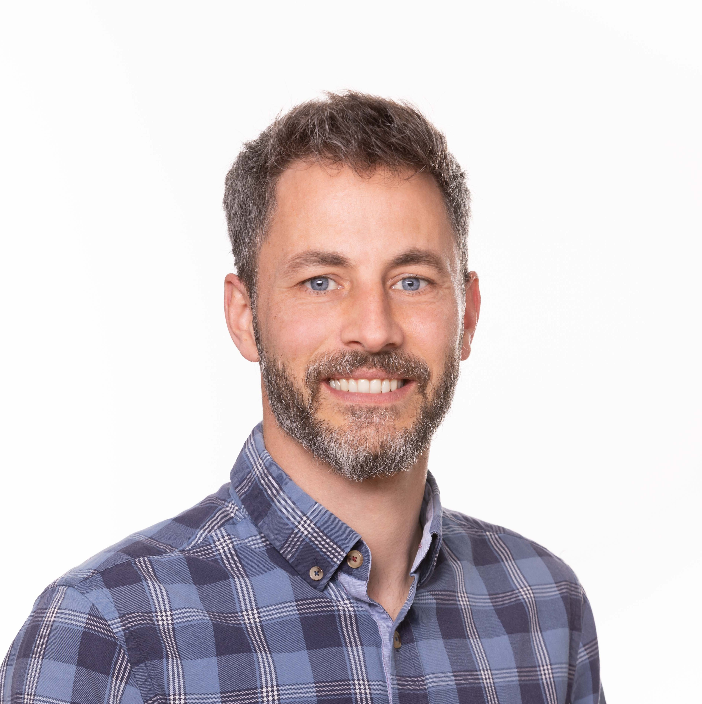
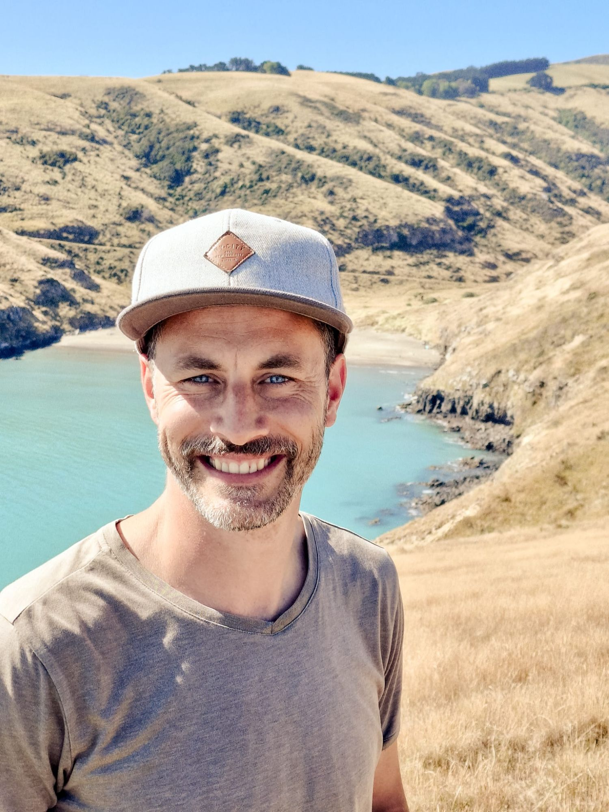
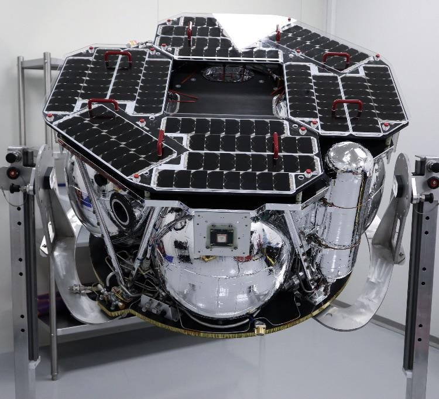
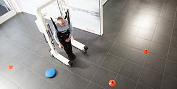
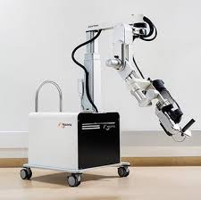
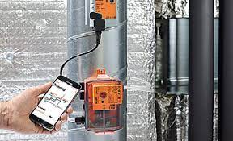
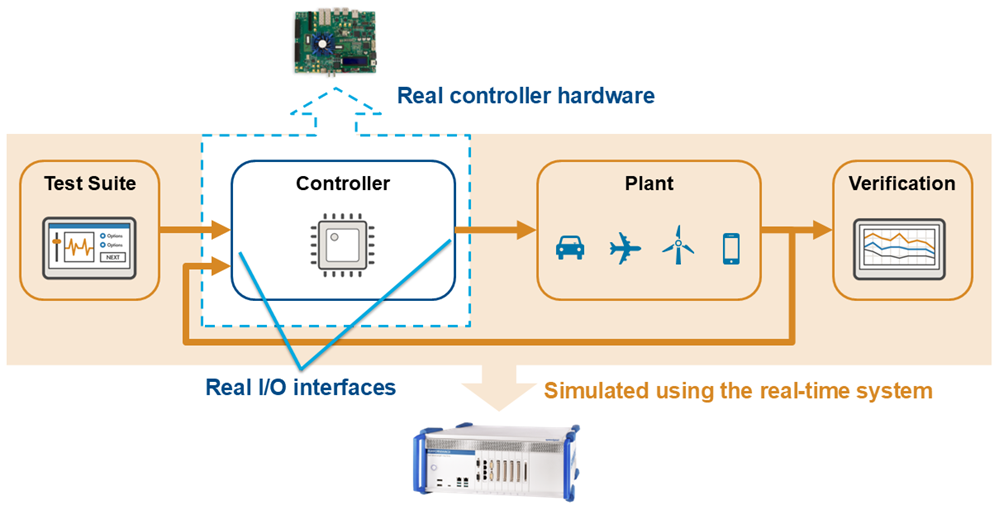
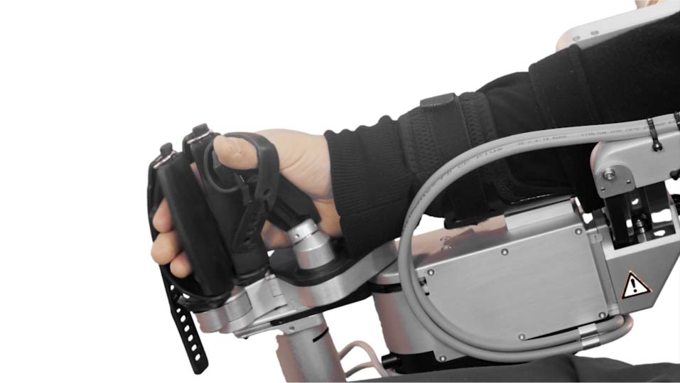
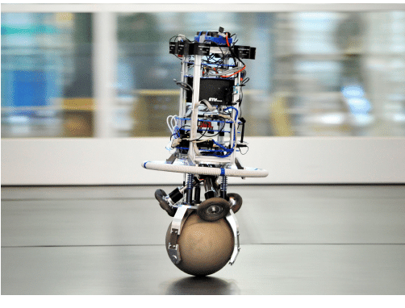
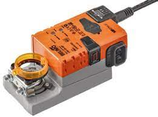

Jonathan Huessy
Control Systems & Robotics Engineer
Designing intelligent systems that bridge the digital and physical worlds—from rehabilitative robotics to lunar missions and precision agriculture.
Happy to discuss or help with your project.
About Me

I am a control systems and robotics engineer with an MSc in Mechanical Engineering from ETH Zurich (robotics, dynamic systems, and control). For more than a decade I have designed, modelled, and verified systems where software, mechanics, and estimation have to work together under real constraints.
My path runs from rehabilitative robotics at Hocoma and building-automation controls at Belimo in Switzerland, through GNC software at Rocket Lab (including work tied to the CAPSTONE lunar mission), to industrial control and software leadership roles in New Zealand—and today to guidance, navigation, and control for precision agriculture at Trimble, with a focus on state estimation, data-driven modelling and controls.
Beyond hands-on development, I have led software teams as technical lead and team lead, designed system and software architecture for a whole product family, and shaped how teams work—from requirements engineering (IREB-certified) through CI/CD and automated verification to release. I enjoy analysing development processes, finding the bottleneck, and fixing it.
How I Help
I am strongest where physics, algorithms, real-time software and humans meet—and I have led the teams and processes that ship such systems. If that sounds like your challenge, let's talk.
Control design & Simulink modelling
First-principles models, LQR/MPC and classical design, verified in simulation before touching hardware—including controllers that respect real actuation limits.
GNC & sensor fusion
Kalman filtering and multi-sensor fusion (e.g. GNSS + IMU), guidance and path following, and estimation that stays trustworthy when sensors degrade.
HIL, SIL & test automation
Hardware-in-the-loop setups, automated regression, and CI-minded verification so control software can be released with less manual testing risk.
Embedded real-time algorithms
C++ firmware for signal processing, motor/actuator drives, and real-time loops—including interrupt- and DMA-based pipelines where timing matters.
Requirements, architecture & lifecycle
IREB-certified requirements engineering, system and software architecture (designed the architecture for a full product family), and verification & validation across the lifecycle—from unit and module tests to SIL and HIL.
Engineering leadership & process improvement
Technical lead and team lead experience across three companies. I analyse how a team develops software, identify the bottleneck—reviews, testing, handovers, unclear requirements—and introduce pragmatic fixes.
Selected Work
A few engagements that show how I approach hard physical systems—problem, approach, and outcome.
GNSS-Degraded Guidance for Precision Agriculture
At Trimble, I work on tractor guidance with Kalman-based GNSS/IMU fusion, focusing on conditions where satellite reception is poor. For canopy and treeline scenarios I ran sensitivity analysis and implemented an adaptive approach in Matlab/Simulink.
Outcome: adaptive approach validated on recorded field datasets, improving path-following robustness under tree cover.

GNC for Electron, Photon & CAPSTONE
At Rocket Lab I improved dynamic models for the HyperCurie engine used in CAPSTONE lunar-mission maneuvers, tuned and validated kick-stage thrust control on hardware-in-the-loop equipment, and implemented reaction-wheel inertia compensation for the Photon spacecraft.
Outcome: engine models used for CAPSTONE lunar-mission maneuvers and thrust-control parameters validated for flight on HIL hardware.

Andago: Autonomous Navigation
At Hocoma I developed an embedded vision-based line-following algorithm and control strategy for a robotic gait trainer, designed for robust autonomous navigation in clinical use.
Outcome: custom algorithm passed a 1000-hour endurance test without failure.

ArmeoPower: Rehabilitative Robotics
Designed task- and joint-space control for a 7-DOF arm used in stroke therapy, including trajectory generation, gravity/friction compensation, and force-based estimation of patient intention so assistance adapted to muscular resistance.
Outcome: markedly more natural assistance and higher patient engagement in therapy.

Advanced HVAC Pressure & Flow Control
At Belimo I derived room-pressure dynamics from first principles and demonstrated LQR and model-predictive controllers under actuation constraints, plus adaptive gain scheduling for water-flow control—clearly outperforming the original PID designs.
Outcome: significant gains in performance and stability versus the baseline PID approach.

Automated HIL Test Framework
Led introduction of automated hardware-in-the-loop testing and build pipelines (Python, Robot Framework) so electronics and application verification relied less on manual procedures.
Outcome: substantially reduced manual testing time and more repeatable release quality.

Self-Calibrating Robotic Hand Module
Engineered a self-calibration method to compensate for gearbox backlash and mechanical aging in a robotic hand module, so the device recalibrated automatically at every startup.
Outcome: consistent precision without manual recalibration between sessions.

Ball-Balancing Robot (Ballbot)
Bachelor thesis work on ETH’s Rezero ballbot: signal processing and a Kalman filter fusing accelerometer and gyro data for state estimation on a dynamically unstable platform.
Outcome: real-time state estimation robust enough to keep a dynamically unstable robot balanced on its ball.

Low-Level Actuator Signal Processing
At Belimo I developed high-performance drive software for an actuator platform, with motor-control and sensing pipelines using hardware interrupts and DMA for hard real-time behaviour.
Outcome: reliable real-time sensing and actuation on constrained embedded hardware.
What Colleagues Say
"Jonathan has very strong collaboration skills and is a very effective learner... He communicates very openly and has a solution oriented mindset."— Former Project Manager, Hocoma AG
"Jonathan recognized the important work and took the responsibility to do it independently even without instructions."— Software Project Lead, Belimo
"Jonathan adjusted to our environment quickly and was soon productive in supporting development of a new propulsion system for Rocket Lab’s CAPSTONE mission, our most ambitious to date."— GNC Colleague, Rocket Lab